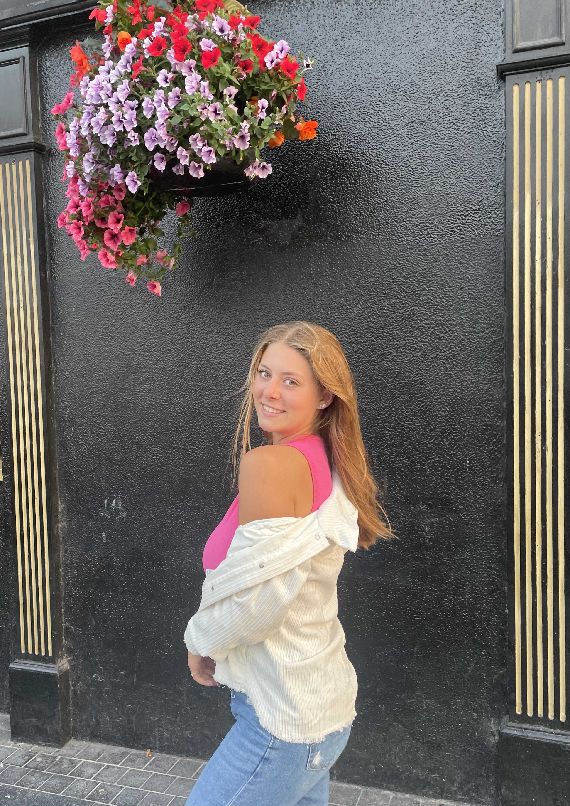
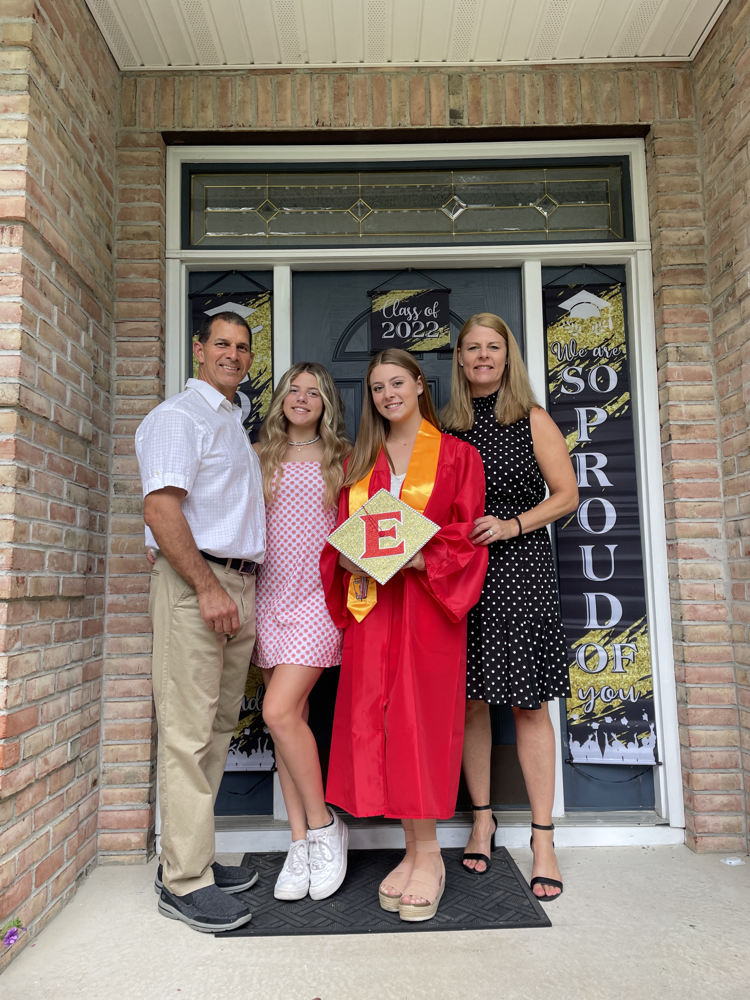
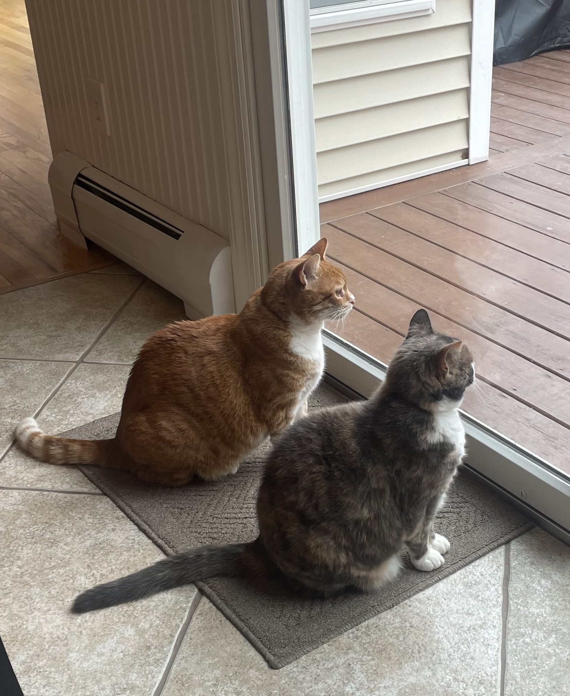
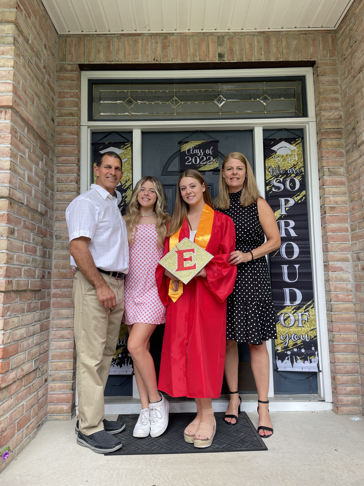
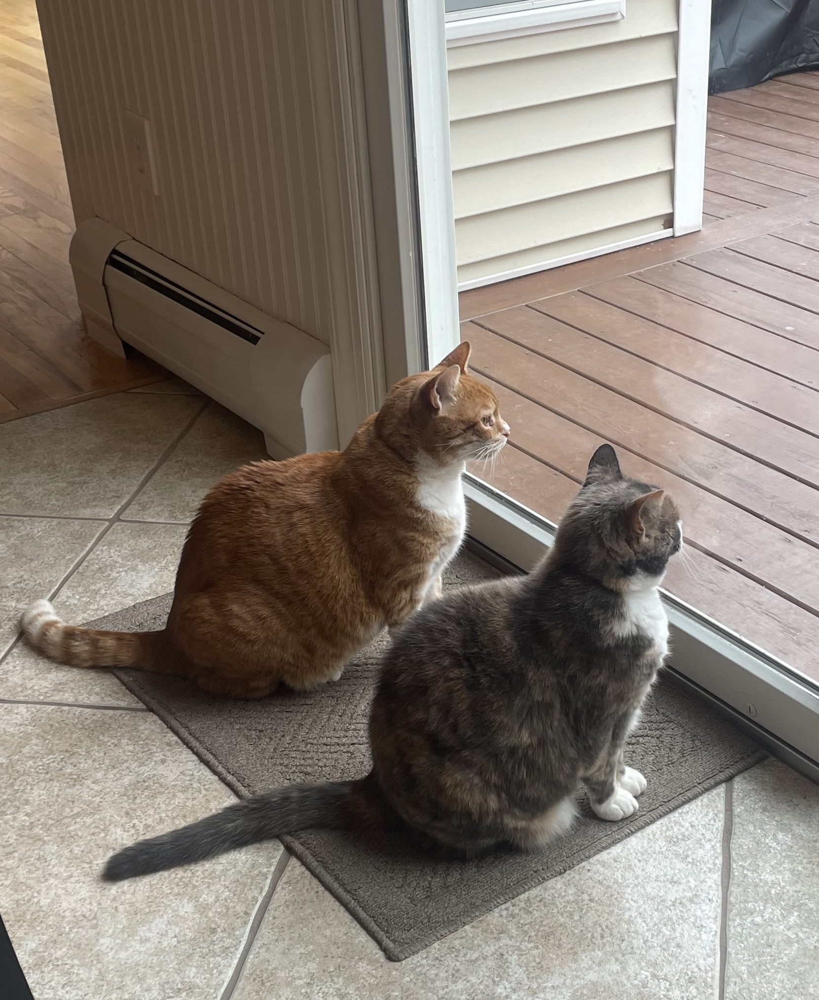

Background
Hi, I am Claudia Brown and I am a first-year student at Elon University. I'm a Strategic Communications and Public Health Studies Double Major. At home in Ringwood, NJ I live with my parents, my 15 year old sister named Delaney, and my two cats. Before coming to Elon, I attended Lakeland Regional High School, a small public high school.
 


